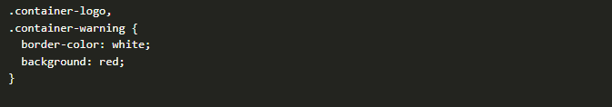
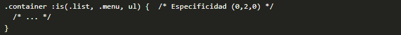
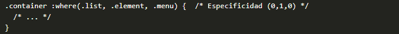
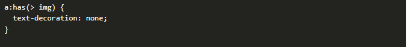
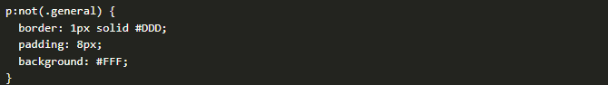

METODOLOGIA BEM
Aqui veras lo que es la metodologia BEM, dicha metodologia tiene un enfoque en (BLOQUE, ELEMENTO, IDENTIFICADOR)
BLOQUE
Segun la metodologia BEM el Bloque es como el elemento padre, este lo nombramos de acuerdo a su funcion
con el fin de darle sentido al contendio que vamos a modifica, este puede ser reutilizado en varios lados de la pagina y tiene un significado propio

aqui podemos ver como se usa en css

ELEMENTO
El elemento es aquel que se encuentra dentro del bloque es como un "hijo" el cual no se deberia reutilizar
tampoco tiene un significado propio

aqui podemos ver como se usa en css

MODIFICADOR
El modificador en BEM es una variacion de un bloque o elemento se utiliza para cambiar la apariencia del bloque o elemento sin modificar su estructura principal

aqui podemos ver como se usa en css

Conclusiones
Podemos concluir que la metodologia BEM nos ayuda a ser mas ordenados a la hora de modificar con base a nuestros selectores, poder ubicarnos mejor en CSS, basicamente mayor legibilidad
COMBINADORES
Existen multiples enfoque para poder crear selectores aparte de los basicos que ya conocemos (elementos, clases, IDs e incluso atributos). Estos combinadores suelen ser mas precisos y versatiles para elementos HTML
| NOMBRE | SIMBOLO | EJEMPLO | SIGINIFICADO |
|---|---|---|---|
| Combinador descendiente | (espacio) | #page div { } | Selecciona elementos dentro de otros (cualquier nivel) |
| Combinador hijo | > | #page > div { } | Selecciona elementos hijos directos (primer nivel) |
| Combinador hermano adyacente | + | div + div { } | Selecciona elementos contiguos a otros (mismo nivel) |
| Combinador hermano general | ~ | div ~ div { } | Selecciona elementos que siguen a otros (mismo nivel) |
| Combinador universal | * | #page * { } | Selecciona todos los elementos (cualquier nivel) |
EJEMPLOS
Combinador descendiente
En CSS, se utiliza el término selector descendiente para referirse a una forma de seleccionar elementos específicos que están contenidos dentro de otros elementos. Aunque esta técnica puede parecer simple, es crucial ejercer precaución, ya que puede convertirse en una fuente de problemas si no se comprende adecuadamente.

Combinador hijo
Aunque el selector descendiente es bastante interesante, nos puede interesar hacer la misma operación, pero en lugar de seleccionar todos los elementos descendientes, seleccionar solo los descendientes directos del elemento con el símbolo >, descartando así nietos y sucesivos.

Combinador hermano contiguo
También es factible hacer referencia a elementos hermanos, que son aquellos elementos que están directamente adyacentes al elemento especificado. Utilizando el símbolo + en el selector de hermano adyacente, es posible seleccionar elementos hermanos que están uno junto al otro en el mismo nivel:

Combinador hermano general
Si consideramos otras posibilidades en el ejemplo anterior, es posible que necesitemos ser menos específicos. En lugar de seleccionar solo los elementos hermanos que son adyacentes, podríamos querer seleccionar todos los hermanos en general, sin requerir que sean adyacentes. Esto se logra utilizando el "selector hermano general, que se representa con el símbolo ~:

Combinador universal
Por último, el selector universal se simboliza con un asterisco * y es la forma de aplicar ciertos estilos en TODOS Y CADA UNO de los elementos HTML correspondiente

COMBINADORES LOGICOS
En ciertas situaciones, es posible que queramos crear grupos con diferentes selectores con el objetivo de escribir menos código, o reutilizar bloques de código CSS en más situaciones, de forma que sean más potentes y flexibles.
| SELECTOR | DESCRIPCION | EJEMPLOS |
|---|---|---|
| div, button, p | Agrupaciones. Seleccionamos varios elementos separándolos por comas. |  |
| is() | Agrupaciones. Idem al anterior, pero permite combinar con otros selectores. |  |
| :where() | Agrupaciones. Idem al anterior, pero con menor especificidad CSS. |  |
| :has() | Permite seleccionar elementos padre que tengan ciertas características en sus hijos. |  |
| :not() | Permite seleccionar elementos que no cumplan ciertas características. |  |
PSEUDOCLASES
Las pseudoclases se utilizan para hacer referencia a elementos HTML que tengan un cierto comportamiento concreto. Volvamos a recordar el esquema general de sintaxis de CSS, donde ahora añadiremos las pseudoclases, que se definen añadiendo dos puntos antes del nombre de la pseudoclase concreta, de la siguiente forma:
| PSEUDOCLASE | DESCRIPCION | EJEMPLO |
|---|---|---|
| :hover | Selecciona el elemento si el usuario pasa el ratón sobre dicho elemento. | PASA EL RATON AQUI |
| :active | Selecciona el elemento si el usuario se encuentra pulsando dicho elemento. | |
| :focus | Selecciona el elemento cuando tiene el foco (está en primer plano). | AQUI EL CAMPO INPUT GANA FOCO |
| :focus-within | Selecciona el elemento si uno de sus miembros hijos ha ganado el foco. |
AQUI EL CAMPO LABEL GANA FOCO TAMBIEN |
| :focus-visible | Selecciona el elemento cuando tiene el foco sólo de forma visible (TAB, por ejemplo). |
AQUI EL CAMPO IMPUT TIENE LA APARICION DEL BORDE PREDETERMINADO |